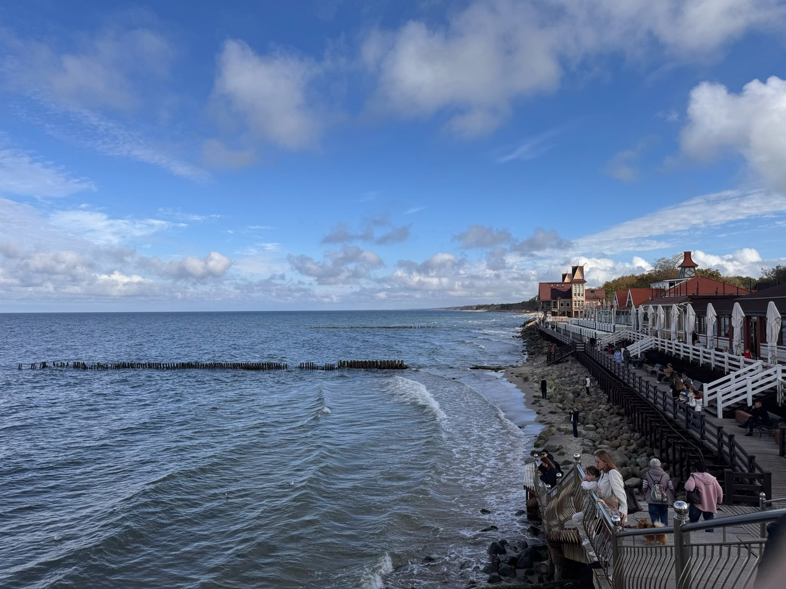
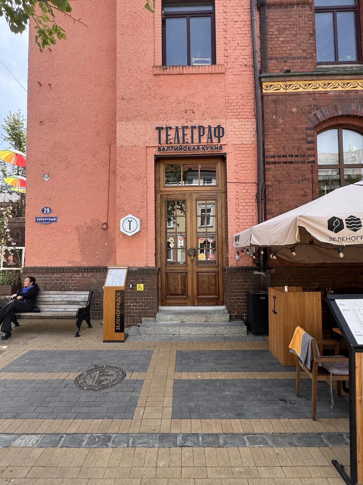
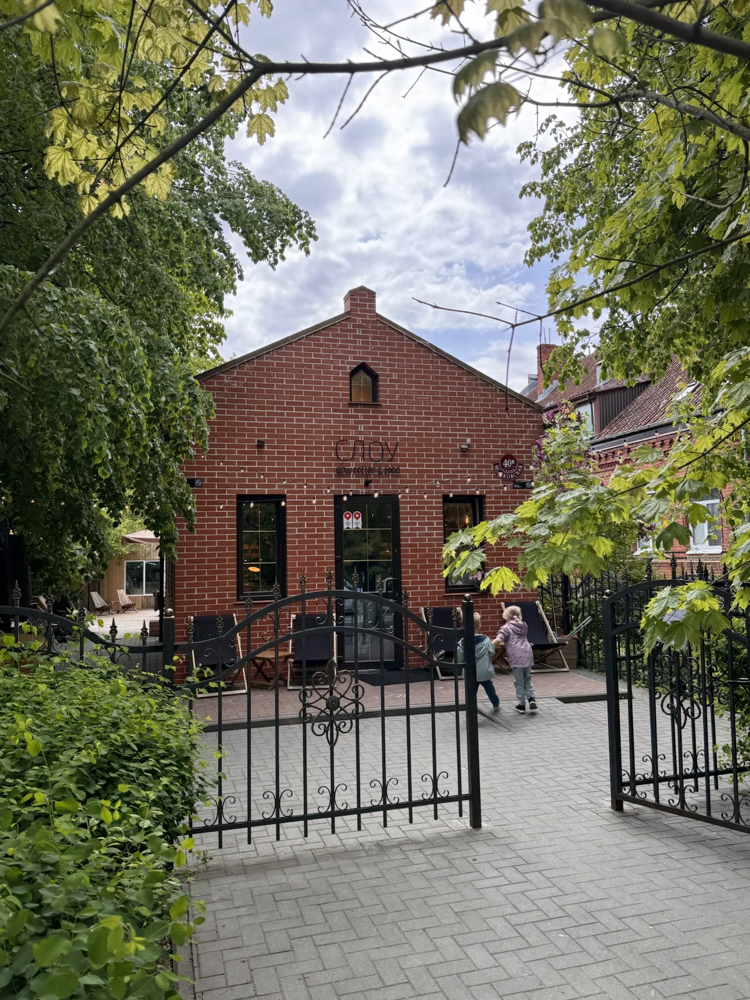
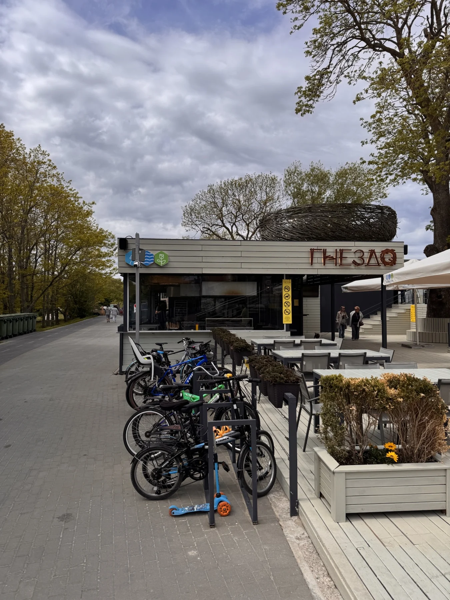
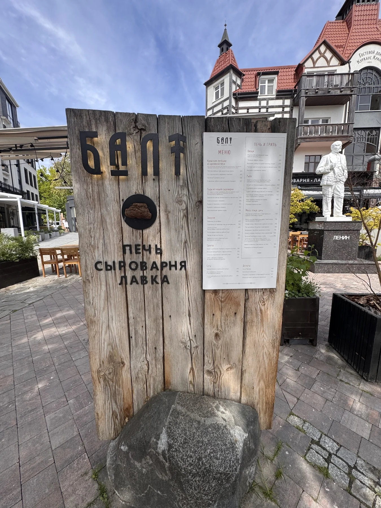
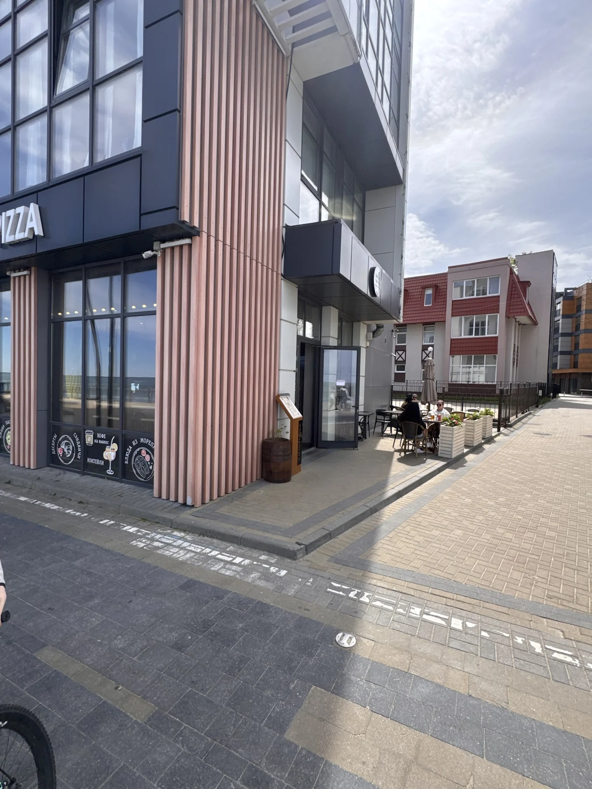
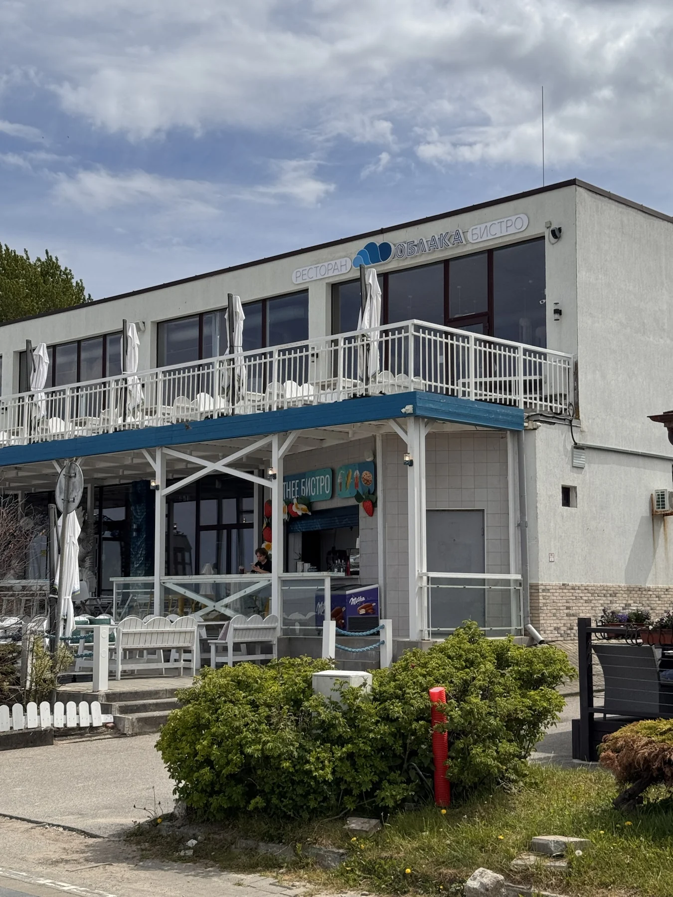

Зеленоградск · Променад Зеленоградска
Остаться у воды
Белая терраса, волны у берега и большое небо. Здесь можно начать прогулку вдоль моря — и никуда не торопиться.
Съёмка автора проекта · 3 октября 2026 Маршруты БалтикиБалтика — это маршрут.
Маршруты БалтикиБалтика — это маршрут.
Свет на сайте
Сегодня · Калининград
В режиме «Авто» свет меняется вместе с солнцем.
Начало астрономической ночи для этих суток не рассчитано.
Спланировать вечерБраузер не сохранил выбор. На этой странице режим работает.
Балтийский
характер
рядом

Место, к которому хочется вернуться
Море, солнечная улица, столик в тихом дворе. Выбирайте то, что зовёт. Сохранённые места останутся в этом браузере, а поездку можно собрать позже.

Зеленоградск · Променад Зеленоградска
Белая терраса, волны у берега и большое небо. Здесь можно начать прогулку вдоль моря — и никуда не торопиться.
Съёмка автора проекта · 3 октября 2026
Зеленоградск · Телеграф
На Курортном проспекте — «Телеграф». В снятом нами меню есть килька и уха. Сохраните остановку для обеда между городом и морем.
Съёмка автора проекта · 30 мая 2026
Зеленоградск · Курортный проспект
За ветвями сосны открывается Курортный проспект. От моря сюда ведёт другая прогулка: по пешеходной улице, мимо фасадов и небольших кафе.
Съёмка автора проекта · 3 октября 2026
Зеленоградск · Слоу
У кирпичного здания — зелень и столики. «Слоу» можно найти на Московской улице, прежде чем выйти к Курортному проспекту.
Съёмка автора проекта · 30 мая 2026
Зеленоградск · Гнездо
На западном пляже «Гнездо» стоит рядом с деревянным настилом. В снятом меню — скумбрия, судак и уха. Остановка для длинной прогулки у воды.
Съёмка автора проекта · 30 мая 2026
Зеленоградск · БАЛТ
За вывеской Курхауса — ресторан «БАЛТ». В авторской подборке его меню — травы, лепёшки и балтийская кухня. Море можно оставить на вторую половину дня.
Съёмка автора проекта · 30 мая 2026
Зеленоградск · Дольче Нонна
На доске у входа в «Дольче Нонну» — пицца и паста. Между улицей Пугачёва и морем можно сделать паузу, а после вернуться на променад.
Съёмка автора проекта · 30 мая 2026
Зеленоградск · Облака
На фотографии — вход в «Облака» со стороны набережной. Отметьте ресторан в своей подборке; меню и адрес откроются в карточке.
Съёмка автора проекта · 30 мая 2026Для этого настроения снимков пока нет. Посмотрите всю подборку.
Можно вернуться позже
Выберите место на фотографии — оно появится здесь. Даты и регистрация для этого не нужны.
Уже намечается день у моря. Добавьте места в свой план, чтобы выбрать порядок, посчитать дорогу и оставить время на остановки.
Подборка хранится вместе с поездкой, если браузер разрешает сохранение.
Файл поможет перенести подборку на другой телефон.
Браузер не разрешает сохранение. Выбор останется только в этой вкладке.
Балтика в ближайшие часы
Загружаем прогноз для прогулки…
Час прогноза: . Время Калининграда.
Данные Норвежского метеорологического института ↗, лицензия с указанием авторства ↗. Выбраны точки региона и ближайшие часы. Закат рассчитан для открытого горизонта.
Обновлено 4 октября 2026 года. Условия посещения остановок проверьте перед поездкой.